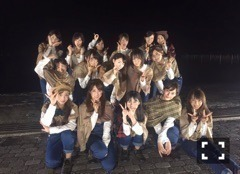
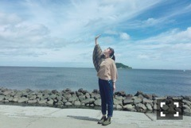

| 2016/11 04 Fri | 斎藤ちはる ブランコのオフショット。 |
ちはるーむへようこそ！
今日は現在期間限定で配信されている
16thアンダー曲「ブランコ」の
MVのオフショットを載せたいと思います。

16thのフォーメーションはこちら！
蘭世がセンターです\( ˆ ˆ )/
私は前回と同じ、2列目の端。
この位置で私に出来ることを考えながら、
もっと前へ出れるように
今回も頑張っていきたいと思います！
端なので皆さんからは比較的
見やすい位置になってると思うので、
いいパフォーマンス魅せられるように
沢山練習しなきゃ◎

手のひらを太陽に透かしてみれば。
そんな歌を歌いたくなるような写真！
地平線が綺麗〜
さりげなく全身のコーディネートを見せています。
ポンチョ？マント？の中は
デニムなオーバーオール！
ポンチョ？マント？で遊んでいた私。
羽ばたく準備は出来ている！
飛ぶぞ！
空を飛びたい！
一つの日傘に入るみりあと私。
人数も多いからね◎
嵩張るし◎
傘は背の高い人が持った方が
お互いが楽だと思うの。
私が思うに。
オフショットでした〜( ¨̮ )
どんなMVになっているのか
気になった方は！
↑是非YouTubeでご覧下さい！
-------------------------♡
♬ ChihaMusic
「リバーシブルー」クリープハイプさん
もどかしくて、恥ずかしい気持ちが
色々な言葉によって表されている。
深く聞くことによって
この曲の気持ちを余計に感じる。
"会いたいな会いたいな会いたいな
の逆の真逆の気持ち"
なんかとても可愛い。
会いたいとは思ってるけど
それを素直に伝えたくはない。
でもどうしても言いたい。
この感じ、とても好き！
明日は富士急ハイランドにて
ラジオ『乃木坂46の「の」！』の
公開収録があります。
来れる方は存分に楽しんでいただいて
来られない方はラジオを聞いてくださいな◎
おやすみ〜
斎藤ちはる